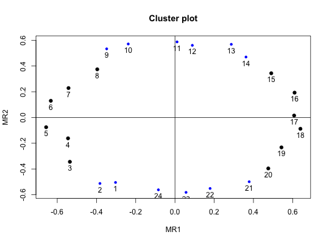

Factor and cluster analysis output typically presents item by factor correlations (loadings). Tables of factor loadings are frequently sorted by the size of loadings. This style of presentation tends to make it difficult to notice the pattern of loadings on other, secondary, dimensions. By converting to polar coordinates, it is easier to see the pattern of the secondary loadings.
polar(f, sort = TRUE)
| f | A matrix of loadings or the output from a factor or cluster analysis program |
|---|---|
| sort | sort=TRUE: sort items by the angle of the items on the first pair of factors. |
Although many uses of factor analysis/cluster analysis assume a simple structure where items have one and only one large loading, some domains such as personality or affect items have a more complex structure and some items have high loadings on two factors. (These items are said to have complexity 2, see VSS). By expressing the factor loadings in polar coordinates, this structure is more readily perceived.
For each pair of factors, item loadings are converted to an angle with the first factor, and a vector length corresponding to the amount of variance in the item shared with the two factors.
For a two dimensional structure, this will lead to a column of angles and a column of vector lengths. For n factors, this leads to n* (n-1)/2 columns of angles and an equivalent number of vector lengths.
A data frame of polar coordinates
Rafaeli, E. & Revelle, W. (2006). A premature consensus: Are happiness and sadness truly opposite affects? Motivation and Emotion. \
Hofstee, W. K. B., de Raad, B., & Goldberg, L. R. (1992). Integration of the big five and circumplex approaches to trait structure. Journal of Personality and Social Psychology, 63, 146-163.
ICLUST, cluster.plot, circ.tests, fa
circ.data <- circ.sim(24,500) circ.fa <- fa(circ.data,2) circ.polar <- round(polar(circ.fa),2) circ.polar#> Var theta21 vecl21 #> v17 17 1.44 0.37 #> v16 16 17.57 0.41 #> v15 15 35.01 0.36 #> v14 14 52.40 0.35 #> v13 13 63.21 0.41 #> v12 12 81.04 0.32 #> v11 11 88.96 0.35 #> v10 10 112.63 0.38 #> v9 9 123.12 0.41 #> v8 8 136.61 0.30 #> v7 7 157.14 0.35 #> v6 6 168.41 0.42 #> v5 5 186.56 0.44 #> v4 4 196.53 0.32 #> v3 3 212.73 0.41 #> v2 2 233.27 0.41 #> v1 1 239.03 0.35 #> v24 24 261.44 0.32 #> v23 23 275.55 0.34 #> v22 22 287.99 0.34 #> v21 21 307.16 0.39 #> v20 20 320.24 0.38 #> v19 19 336.84 0.35 #> v18 18 352.19 0.42